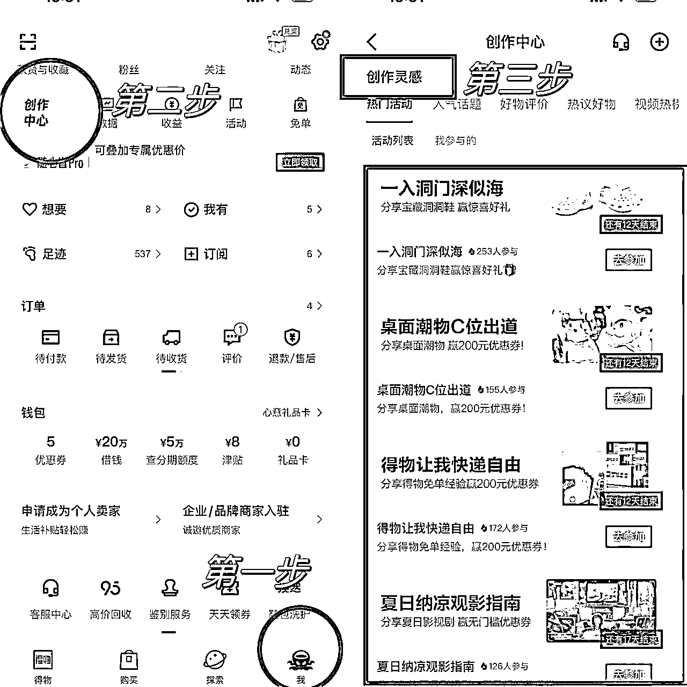

来源：https://jvx6nnxr4va.feishu.cn/docx/Vu77d8PU3o44zuxpTaIcOF6UnCf
大家好，我是小又。
关于得物这个项目，我上次也跟大家分享了，详情可点下方链接查看
由于大批创作者加入得物平台，所以比起去年，现在得物也比较卷了，平台规则也越来越严格，以前能做的涨粉技巧、与种草无关的高数据内容，现在几乎都是平台红线。
于是开始有一部分小伙伴放弃得物这个平台。
即便如此，我也有学员靠得物赚到了第一个1w+，一篇动态涨了292粉。
也有不少小伙伴说不知道更新什么内容，选什么赛道，今天就跟大家分享一下怎么起号，以及如何做不容易违规的内容，以及如何靠内容安全涨粉。
如果你是自媒体新手，没有什么经验，也不知道做什么赛道，那就不要纠结，先去做，手上有什么就发什么，前期内容杂一点没关系，先把号做起来，到了100粉以后再去考虑垂直度的问题，而到了100粉以后，基本你也知道自己以后该做什么内容了。
当然，如果你本身就有一些规划，或者你有自己擅长的点，比如你很会化妆，或者你衣服鞋子很多，都可以做这些类型的垂直赛道，这样更好。
也有小伙伴说：我就是不知道发什么，我手上的东西很少，而且得物上都没有，怎么办？
这些都不是问题。
并不是一定要得物上面有的产品你才可以发，没有也行，只要是好物种草都可以，不是得物买的，只要得物上面有卖，也可以挂得物的链接。
说东西很少的小伙伴，再不济你手上总有洗面奶、沐浴露、洗发水吧？手机、电脑、耳机有吧？一两双球鞋，一两个包包，都有吧？
而且每一个商品至少可以给你做3次内容，比如一篇图文，一个开箱，一个使用视频，这就三次了，只要是不懂角度，不同主题，同一个商品也可以发好几次，那么100粉之前的初始内容你就有了。
100粉以后就可以接商单了，到时候可以拍摄的产品就会慢慢多起来。
做过得物的小伙伴都知道，文案一不小心就会营销违规，小红书的风格在得物很多都用不了。
如果多次违规，得物就会认为你在接私广，处罚一般是一个月内不能接任何广告。
如何降低文案营销感，通过我自己和带学员的经验总结了以下几个方法：
1.不要用大牌跟小牌对比来突出小牌好用，这在平台看来是拉踩。
2.不要使用一点也不、一点都不、超级、最、唯一、第一等极限性用词，这些会让你的文案看起来很营销。
3.不要提及功效性，比如祛斑、生发、减肥、美白等，这些非常容易违规。
4.尽量不要提及成分，部分商单可以，自己的个人动态最好不要提。
5.不要给人一种“这个东西很好，大家都来买”的感觉，语气尽量平一些，分享你自己的真是体验感就好。
给大家一个框架，比如你要推荐一个清爽的洗面奶，那么你可以这么写：
你的皮肤问题是什么，对你来说有什么困扰，你推荐的这个洗面奶有什么特点，你用了有什么感受，质地怎么样，你觉得效果如何。
把以上这些说明白了，一篇合格的动态就写好了。
一定要多分享自己的真实体验感，不要夸张。
去年涨粉，新手主要是通过互粉的方式去做，后来就不行了，得物对互粉查得很严，只要查出来基本都会有1~2个月的处罚期，处罚期内不能在引力平台接任何广告。
但是通过内容去涨粉，其实是很难的，新手很难做到像大博主那样分享的内容让人看了有主动关注的欲望。
不过小又找到了一个新手小白也可以用的内容涨粉方法，而且是平台鼓励的，不违规的。
得物创作中心每隔一段时间就会有一个官方组织的涨粉活动，主题大概是挑战XX天涨粉XXX，活动入口如下：

这个页面会有很多活动，有些活动会送大额无门槛券，想涨粉的话就参加涨粉挑战活动。
此外，还有一些活动是涨粉的，比如：
主要是分享一些得物运营的经验，写得越干越好。
除了前面提到的一篇动态涨粉292的同学，其他同学也有涨了几十粉的。
所以用对了方法，涨粉真的不难，粉丝越多，接广告的报价也会相应提高，而且还能免费拿到很多产品，我有学员做得物，包包家里已经堆不下了，也实现了手表自由。
很多人说做得物不赚钱，就是薅点免费的产品，500粉以内确实不怎么赚钱，但产品+收益，也很香了。
在得物上赚到钱以后，有以上的截图，如果没有遇到官方活动，也可以发一篇干货贴，照样是可以涨粉的。
比如：
这些内容都是可以涨粉的。
大家在写的时候可以多看看别人的经验。
但是有一点，非常重要！！！
一定一定不要照搬别人的内容，很容易违规！！得不偿失啊！！！一定要原创一定要原创一定要原创！！！
以上就是今天的分享，下次继续给大家分享做得物的干货。
得物相对来说是个比较新的平台，虽然对新人很友好，但是规则会越来越严格，圈友们如果有想法，还是要尽早入局，越早做越能赚钱。
最后说几句鸡汤，大家共勉。
用户永远需要新面孔。
平台永远需要新博主。
甲方永远需要新流量。
所以不要跟成熟的博主比，也不要怕比不过他们，想到就马上去做，大博主吃肉，我们进场晚的只要踏踏实实去做也能喝口汤，况且这也不难。
大家冲吧！